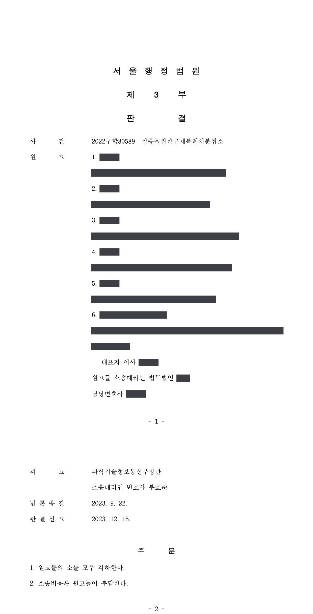

ICT 규제샌드박스 실증특례 지정처분 취소소송 (일반의약품 화상 판매기)
서울행정법원 2022구합80589 · 담당변호사 부효준
판결문

사건의 요지
「정보통신 진흥 및 융합 활성화 등에 관한 특별법」에 따라 약국 앞 일반의약품 화상 판매기에 부여한 실증특례 지정처분에 대하여, 처분의 상대방이 아닌 다른 직역의 종사자들과 그 단체가 취소를 구한 사건입니다. 제3자가 실증특례 지정처분의 취소를 구할 원고적격이 있는지가 쟁점이 되었습니다.
이 사건의 언론보도 (1건)
- 2023. 12. 16.약사공론한약사약국 화상투약기…법원, 집행정지서 규제특례 취소까지 '각하'서울행정법원 2022구합80589 ICT 규제샌드박스 실증특례 지정처분(일반의약품 화상 판매기) 취소소송 판결 보도
기사 제목을 누르면 해당 언론사의 기사가 새 창으로 열립니다. 기사 내용은 언론사의 것입니다.
사건의 주요 내용
약사 출신 대표자가 개발한 ‘일반의약품 스마트 화상 판매기’는 소비자가 약국 앞에 설치된 기기의 화면으로 약사와 화상통화를 하여 상담과 복약지도를 받은 뒤 원격제어 방식으로 일반의약품을 구매하는 자동판매기 형태의 장치입니다. 약국개설자는 약국 이외의 장소에서 의약품을 판매할 수 없다는 약사법 제50조 제1항의 규제를 적용받지 않기 위하여, 개발 기업은 2019년경 「정보통신 진흥 및 융합 활성화 등에 관한 특별법」(정보통신융합법) 제38조의2 제1항에 따라 처분청에 실증을 위한 규제특례(ICT 규제샌드박스 실증특례)를 신청하였습니다.
처분청은 2022년 6월 관계기관의 검토와 심의위원회의 심의·의결을 거쳐 이 판매기에 대한 실증특례를 지정하였습니다. 유효기간은 부가조건 이행을 확인받은 날부터 2년, 실증범위는 서울 지역 10개소에 우선 운영한 뒤 최대 1,000대까지 단계적으로 확대하는 것이었고, 부가조건으로 약국개설자(약사)가 등록된 약국에 판매시스템을 설치하고 본인 또는 고용한 약사가 판매하도록 하여 설치·운영의 책임주체를 ‘약사’로 정하였습니다.
이에 약사법에 따라 면허를 받은 한약사 5명과 한약사의 권익 증진 등을 위하여 설립된 법인이, 이 처분이 판매기를 설치·운영할 수 있는 주체를 약사로 한정하여 한약사를 배제하였다며 실증특례 지정처분의 취소를 구하는 소를 제기하였습니다. 부효준 변호사는 처분청을 대리하였습니다.
쟁점
- 실증특례 지정처분의 직접 상대방이 아닌 다른 직역의 종사자와 그 단체가 처분의 취소를 구할 원고적격(법률상 이익)이 있는지
- 특례에서 배제되어 영업 편의성이 떨어지고 경제적 손실을 입을 가능성이 있다는 사정이 처분의 근거 법규·관련 법규가 보호하는 개별적·직접적·구체적 이익에 해당하는지
원고의 주장
- 이 사건 처분은 판매기를 설치·운영할 수 있는 주체를 ‘약사’로 한정함으로써 한약사를 근본적으로 배제하고 있는데, 처분청은 그 이유를 ‘신청 내용에 한약사가 포함되어 있지 않기 때문’이라고 설명할 뿐 합리적인 근거를 제시하지 못하였다고 주장하였습니다.
- 한약사 역시 약사법에 따라 약국을 개설하여 일반의약품을 판매할 법적 권리가 있으므로, 이 사건 처분은 약사법과 정보통신융합법에 위반되고, 한약사인 원고들을 약사들과 달리 자의적으로 차별하며 직업수행의 자유를 침해하여 위법하다고 주장하였습니다.
- 원고적격에 관하여는, 이 사건 처분으로 한약사들이 2년 동안 판매기를 설치할 기회를 전혀 얻지 못하게 되어 한약사가 개설·운영하는 약국의 편의성이 떨어진다는 일반 국민의 부정적 인식이 누적되고 그로 인한 경제적 손실이 발생할 가능성이 있다고 주장하였습니다.
부효준 변호사의 주장
- 원고들은 이 사건 처분의 직접 상대방이 아닌 제3자에 불과하고, 이 사건 처분이 있었다고 하여 원고들이 정보통신융합법 제38조의2 제1항에 따라 스스로 실증특례를 신청하는 등 권리를 행사하는 데 아무런 제한도 생기지 않는다고 반박하였습니다.
- 따라서 원고들이 이 사건 처분으로 법률상 보호되는 이익을 침해당하였다고 볼 수 없어 원고적격이 없으므로, 원고들의 소는 모두 부적법하다는 본안전 항변을 하였습니다.
법원의 판단
법원은 대법원 판례(2006. 3. 16. 선고 2006두330 전원합의체 판결, 2021. 2. 4. 선고 2020두48772 판결)에 따라, 처분의 직접 상대방이 아닌 제3자는 이른바 경원자·경업자 관계처럼 처분의 근거 법규 또는 관련 법규에 의하여 개별적·직접적·구체적으로 보호되는 이익이 있을 때에만 취소를 구할 원고적격이 있고, 간접적·사실적·경제적 이해관계만 있는 경우에는 원고적격이 없다는 법리를 전제로 하였습니다.
이 사건에서 법원은, 처분이 특례를 신청한 기업에 대하여 이루어진 것으로 원고들은 제3자의 지위에 있음이 명백하고, 정보통신융합법 제38조의2는 실증특례 신청의 요건이나 지정 대상에 특별한 제한을 두고 있지 않으며, 원고들이 유사한 내용의 실증특례를 신청하였다고 볼 증거가 없고, 원고들과 신청 기업이 경쟁관계에 있어 일방에 대한 지정이 타방에 대한 지정 거부로 귀결되는 경우도 아니라고 보았습니다.
한약사 약국의 편의성 저하에 따른 부정적 인식과 경제적 손실의 가능성은 간접적·사실적·경제적 불이익에 불과하고, 처분이 취소되더라도 원고들에게 판매기를 설치·운영할 권리가 곧바로 인정되는 것이 아니어서 그 불이익이 회복되지도 않는다고 판단하였습니다. 결국 법원은 처분청의 본안전 항변을 받아들여, 처분이 약사법에 위반되는지나 차별에 해당하는지에 관한 본안 판단에 나아가지 않은 채 원고들의 소를 모두 각하하였고, 소송비용은 원고들이 부담하게 되었습니다.
불이익처분의 상대방은 직접 개인적 이익의 침해를 받은 자로서 원고적격이 인정된다. 처분의 직접 상대방이 아닌 제3자라 하더라도 이른바 ‘경원자 관계’나 ‘경업자 관계’와 같이 처분의 근거 법규 또는 관련 법규에 의하여 개별적·직접적·구체적으로 보호되는 이익이 있는 경우에는 처분의 취소를 구할 원고적격이 인정되지만, 제3자가 해당 처분과 간접적·사실적·경제적인 이해관계를 가지는 데 불과한 경우에는 처분의 취소를 구할 원고적격이 인정되지 않는다(대법원 2006. 3. 16. 선고 2006두330 전원합의체 판결, 대법원 2021. 2. 4. 선고 2020두48772 판결 등 참조).
서울행정법원 2022구합80589 판결 이유 ‘3. 다. 판단 1)’ 부분
또한 정보통신융합법 제38조의2에서는 ‘신규 정보통신융합 등 기술·서비스를 활용하여 사업을 하려는 자는 해당 기술·서비스가 다른 법령의 규정에 의하여 허가 등을 신청하는 것이 불가능한 경우 등에 해당하여 사업 시행이 어려운 경우 해당 기술·서비스에 대한 제한적 시험·기술적 검증을 하기 위하여 피고에게 관련 규제의 전부 또는 일부를 적용하지 않는 실증을 위한 규제특례를 신청할 수 있고(제1항), 피고는 위와 같은 신청이 있는 경우 관계기관의 장의 검토와 신기술·서비스심의위원회의 심의·의결을 거쳐 실증을 위한 규제특례를 지정할 수 있다(제3항)’고 정하고 있을 뿐, 실증을 위한 규제특례 신청의 요건이나 지정 대상에 관해 특별한 제한을 두고 있지 않고, 원고들이 피고에게 이 사건 신청과 유사한 내용의 실증을 위한 규제특례를 신청하였다고 볼 증거가 없으며, 이 사건 신청과 관련하여 원고들과 특례 신청 기업이 서로 경쟁관계에 있어서 일방에 대한 실증을 위한 규제특례 지정이 타방에 대한 지정 거부로 귀결될 수밖에 없는 경우에 해당한다고도 보이지도 않는다.
서울행정법원 2022구합80589 판결 이유 ‘3. 다. 판단 2) 가)’ 부분
원고들은 ‘이 사건 처분으로 인해 한약사들이 향후 2년 동안 이 사건 판매기를 설치할 기회를 전혀 얻지 못하게 되어 한약사가 개설·운영하는 약국의 편의성이 떨어진다는 일반 국민의 부정적 인식이 누적되고 그로 인한 경제적 손실이 발생할 가능성이 있다’는 취지로 주장하나, 이는 간접적·사실적·경제적 불이익에 불과하고, 이를 이 사건 처분의 근거 법규 및 관련 법규에 의하여 보호되는 개별적·직접적·구체적 이익을 침해당한 것으로 보기는 어렵다.
설령 이 사건 처분이 취소된다고 하더라도 그로 인해 곧바로 원고들에 대하여 이 사건 판매기를 설치·운영할 권리가 인정되는 것은 아니므로, 원고들이 주장하는 불이익이 회복되지도 않는다.
서울행정법원 2022구합80589 판결 이유 ‘3. 다. 판단 2) 나), 다)’ 부분
※ 판결 이유 가운데 이 사건의 판단 기준이 된 부분을 그대로 옮긴 것으로, 당사자 이름 등은 가렸습니다.
이 사건이 보여 주는 것
규제샌드박스 실증특례는 특정 기업의 신청에 대하여 규제 적용을 한시적으로 면제하는 처분이므로, 그 지정에 불만이 있는 다른 직역이나 단체가 소송으로 다투려면 먼저 자신에게 법률상 보호되는 이익이 있음을 보여야 합니다. 이 판결은 정보통신융합법이 특례 신청의 요건과 대상에 제한을 두지 않아 누구든지 스스로 신청할 수 있는 구조에서는, 다른 직역이 특례에서 배제되었다는 사정이나 그로 인한 평판·매출의 불이익이 원고적격을 인정할 근거가 되지 않는다는 점을 보여 줍니다.
처분청으로서는 본안전 항변으로 소송을 마무리할 수 있었고, 특례 지정에 이해관계가 있는 쪽에서는 취소소송보다 직접 실증특례를 신청하거나 부가조건의 변경을 요청하는 등 다른 경로를 검토할 필요가 있다는 실무상 시사점이 있습니다.
관련 법령정보통신 진흥 및 융합 활성화 등에 관한 특별법 제37조, 제38조의2 제1항·제3항 · 정보통신 진흥 및 융합 활성화 등에 관한 특별법 시행령 제40조 제6항, 제42조의4 제5항 · 약사법 제2조, 제4조, 제50조 제1항
관련 단어규제샌드박스실증특례실증을 위한 규제특례정보통신융합법 제38조의2원고적격제3자의 원고적격법률상 이익경업자·경원자 관계일반의약품 화상판매기한약사약사법 제50조소 각하
비슷한 처분을 받으셨다면
행정처분은 처분이 있음을 안 날부터 90일 이내에 행정심판이나 취소소송으로 다투어야 하고, 기간이 지나면 돌이킬 수 없는 처분은 집행정지를 서둘러야 합니다. 처분서를 받은 날짜부터 확인해 드립니다.